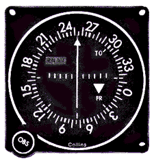

|
Our researchers have developed an advanced acoustic positioning system. We now have an installed prototype, and the field test is about to begin. The positioning system consists of several rotating towers, deployed at known locations. Each tower has a loudspeaker attached to it, emitting a sinewave sound at a constant frequency. The towers rotate around their vertical axis counterclockwise once a second, while keeping their heading synchronized at all times (for example, they always face north at the same time).
The sound attenuates with distance
(because the power of the signal spreads out on a large surface):
the measured power is proportional to |

Photo by NASA |
The towers and the rotating mechanisms were very expensive, so we had to choose cheap loudspeakers. They cannot be exactly calibrated to the same loudness. Even so, the generated amplitudes shouldn't differ more than 10% between towers (measured at the same distance and direction).
The speakers are installed in a way that the emitted signal is strongest in the direction of the speaker, with a +/- 45 degree spread.
The prototype installation is situated in a friendly, sheltered valley, with no wind or any source of external noise.
The speed of sound in the local environment was measured to be a stable 340.29 m/s.
Our coordinate system uses the meter for a unit. X and Y are euclidean coordinates. The earth can be considered completely flat in the area of the prototype. The value of X grows from west to east, that of Y grows from south to north.
The towers are described in the towers file. Each line in the file gives the position and the emitted frequency of a tower, like so:
X Y FREQ
Your task is to take a number of sound recordings we made in the field, and in each case determine the position of the recording apparatus. The apparatus was not moved during recording.
X Y
For the field test to be considered successful, the calculated and real position must not differ by more than 2 meters.
example.wav input for calibration.
example.wav:
-179.4 -95.3